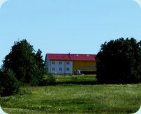
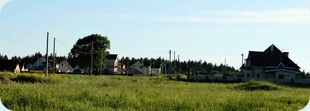

Участки ИЖС в коттеджном поселке в Ломоносовском районе
Приветствуем вас на сайте коттеджного поселка «Ропшинская долина»!
«Ропшинская Долина» — это динамично развивающийся экологически чистый коттеджный поселок, находящийся в Ленинградской области невдалеке от Санкт-Петербурга, в Ропше.
Коттеджный поселок "Ропшинская Долина" расположился в Ломоносовском районе, в Ропше, на живописном склоне ижорской возвышенности, открыв прекрасные виды на окрестные леса и Санкт-Петербург. В ясную погоду со склона видна узкая полоска Финского залива и даже Карельский перешеек. Недаром эти места почитались еще с петровских времен, царская семья строила здесь усадьбы и содержала прекрасные охотничьи угодья. Сегодня участки в Ропше — престижное место для строительства дома и выгодное вложение в недвижимость Ленобласти.
Наш коттеджный поселок разделен на три части — премиум, бизнес (с участками ИЖС) и эконом класса.
«Радужный поселок» — располагается в нижней части склона, переходящего в равнину. Перепад высот составляет 60-80 метров над уровнем моря. Планировка поселка состоит из центральной и 7 поперечных улиц. С легкой руки первых покупателей мы решили назвать его радужным. Цвет кровли домов будет соответствовать названию улицы, что сделает поселок невероятно красивым. Здесь мы предлагаем вам купить участки от 8 до 15 соток.
В коттеджном поселке бизнес-класса «На горке» можно купить земельные участки в статусе ИЖС с площадью от 10 до 19 соток. В чем преимущество ИЖС? Купив участок ИЖС в Ленобласти и построив дом, вы имеете законное право в нем зарегистрироваться (раньше это называлось «прописаться»).
Третья часть коттеджного поселка называется «Царский склон». «Царский склон» — поселок премиального уровня. Располагается на ландшафтном склоне с перепадом высот 80-120 метров над уровнем моря. Можно купить участки с площадью от 12 до 20 соток.
У вас есть возможность купить участки в Ленобласти в собственность для самостоятельного строительства дома. Также Вы можете выбрать проект коттеджа и доверить строительство профессионалам — мы построим дом в коттеджном поселке вашей мечты!
В коттеджном поселке «Ропшинская Долина» предусмотрены все необходимые коммуникации и объекты инфраструктуры. Вы сможете купить участок под строительство с коммуникациями и насладиться привычным комфортом проживания. Экологическая обстановка в Ломоносовском районе является одной из лучших в пригородах Санкт-Петербурга, окрестности богаты чистейшими родниками и озерами.
Купите участок ИЖС в коттеджном поселке в Ропше и продлите себе жизнь!
«Ропшинская долина» — один из наиболее развитых и продуманных коттеджных поселков Петербурга, и в частности Ломоносовского района, в форме экопоселения. Мы постарались, чтобы жизнь в нашем поселке была максимально комфортной и приближенной к природе. Купите участок в Ропше и вы вдохнете глоток свежего воздуха в свою жизнь. Отсюда не захочется уезжать, а участок ИЖС даст вам право жить на постоянной основе, полностью уехав из душного города. Здесь, в Ропше, можно избавиться от суеты, загрязненной атмосферы, выхлопных газов и грязных улиц, так надоевших в городе. Приближаясь к природе, вы продлеваете жизнь себе и своим близким. Добро пожаловать в наше экопоселение!
Приезжайте в коттеджный поселок "Ропшинская Долина" - мы всегда рады видеть Вас. Хотите зарезервировать или купить участок? — Звоните: 967-25-80.
продажа земельных участков продажа коттеджей в ленинградской области

Черемыкино
В нашем предудыщем проекте в поселке Черемыкино, неподалеку от "Ропшинской Долины", продаются 2 последних участка с готовыми домами - по хорошей цене!
